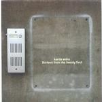

| Artist: | Karda Estra |
| Title: | Thirteen From The Twentyfirst |
| Label: | No Image NICD13 |
| Length(s): | 51 minutes |
| Year(s) of release: | 2000 |
| Month of review: | [03/2001] |
| 1) | Dorothea's Nightmusic | 3.28 |
| 3) | John Deth | 3.20 |
| 4) | Autumn Cannibalism | 3.58 |
| 5) | Sleeping Venus | 2.15 |
Miniatures
| 7) | The Toy Musician | 2.24 |
Soundtracks
| 8) | Evolution - Theme From "the Jag Man" (revised) | 2.43 |
| 9) | Remember Me | 2.49 |
| 10) | Soulsearcher | 4.38 |
| 11) | Rex Mundi | 5.43 |
| 13) | River | 6.48 |
On The Ribbon Of Extremes my thoughts go more to Portishead. The song has some tenseness lurking in there. John Deth however opens quite merrily. Quite abruptly however the music takes on a different character with spooky, warped sounds. The soothing melodic vocals win out however.
Autumn Cannibalism has a mysterious ring to it, with rather loud percussion at times, but for the most part oboe and keyboards. Again all very subtly performed. Sleeping Venus has real lyrics for a change. The song itself is the most quiet up til now with mainly acoustic guitar.
The next part is comprised of two miniatures. Bathed In Light is the first of these. This is a rather classical sounding piece, a quartet in fact, sounding a more complex and intertwined than the previous tracks. The melodic material is reminiscent of the first tracks. The booklet states we have two flutes and two oboes playing here. The second part, The Toy Musician, has two viola's instead of the flutes, and is also a quartet.
The final part of the album consists of six tracks, all of which are from movies or radio performance. The first is a reworking of an earlier track, this time in more "acoustic" format with violin and viola. Remember Me is a longing sounding piece with fast acoustic guitar, but still very subdued and rather tense sounding.
Soulsearcher is a very dark piece of music. Very creepy. The eerie repetitive vocals do not help either. And then the percussion at the end. Can't be a very merry movie.
The lengths of the tracks are going up now, Rex Mundi. The music continues to be very moodevoking and interesting, with nice dark piano playing. The vocals are now gone a bit, only to return in the final track, River, with its rolling percussion and strong melodies on the bassoon.